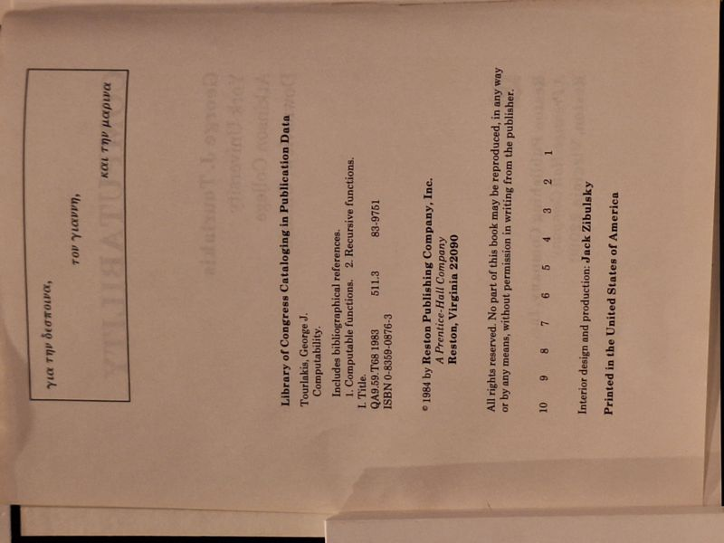

Computability
George J. Tourlakis · Reston Publishing, Reston, Virginia, 1984

C$28 · Good condition
'Computability' by George J. Tourlakis (York University / Atkinson College). Reston Publishing Company (a Prentice-Hall company), 1984. A rigorous introduction to the theory of computable and recursive functions. Dark blue cloth hardcover with copper spine/front lettering, issued without dust jacket. Binding sound; the front board has a scar/abrasion and a small corner chip, with general rubbing; text block clean. A Good copy of the scarce original edition.
Details
- Publisher: Reston Publishing, Reston, Virginia, 1984
- Binding: Hardcover
- Edition: First edition (1984)
- Condition: Good
- ISBN: 978-0-8359-0876-4
- Category: Mathematics